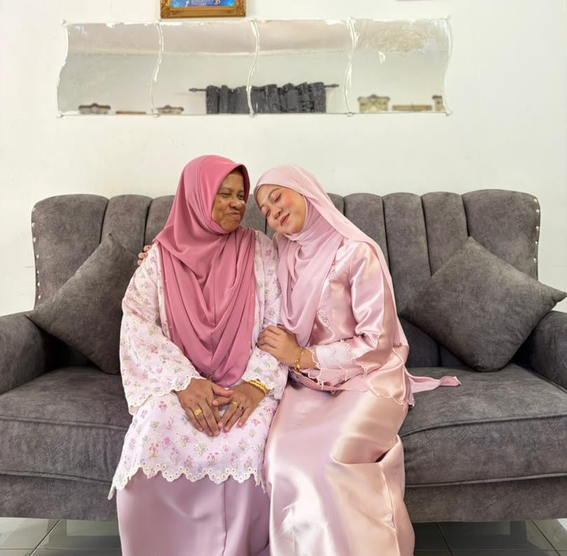
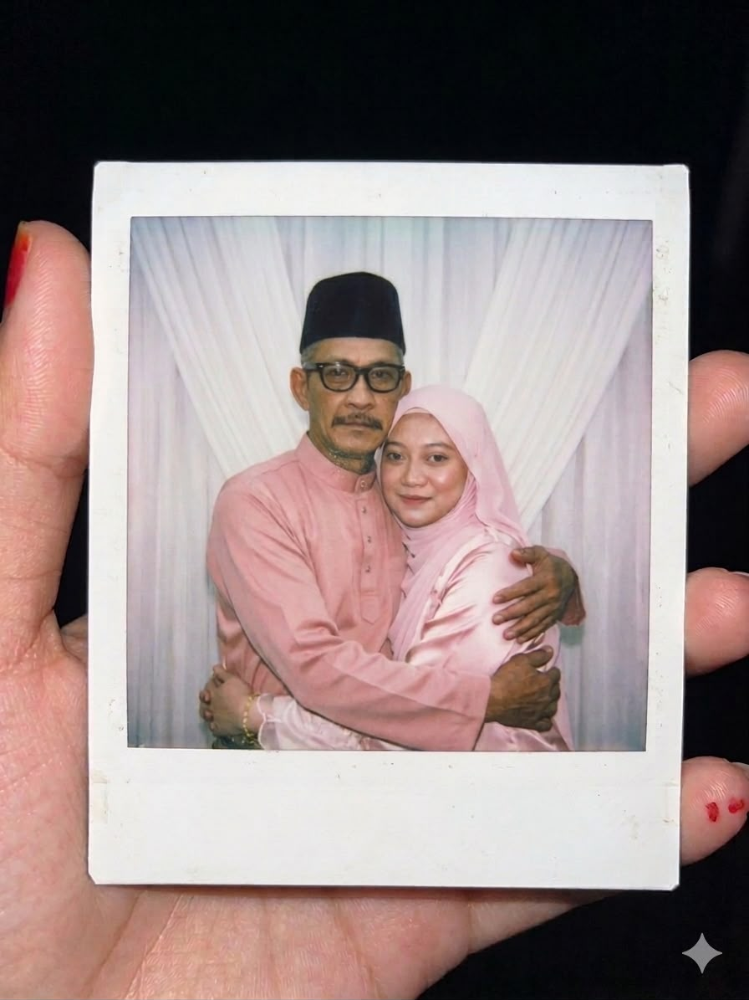
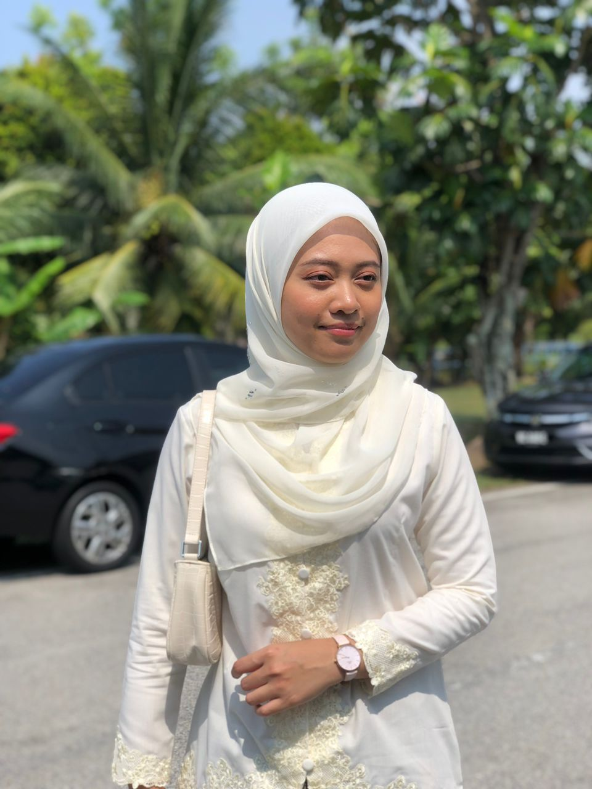
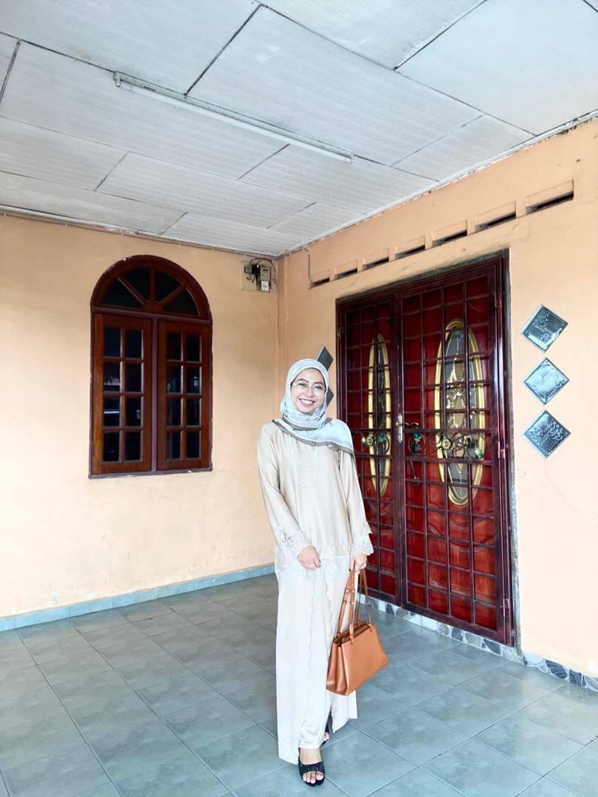
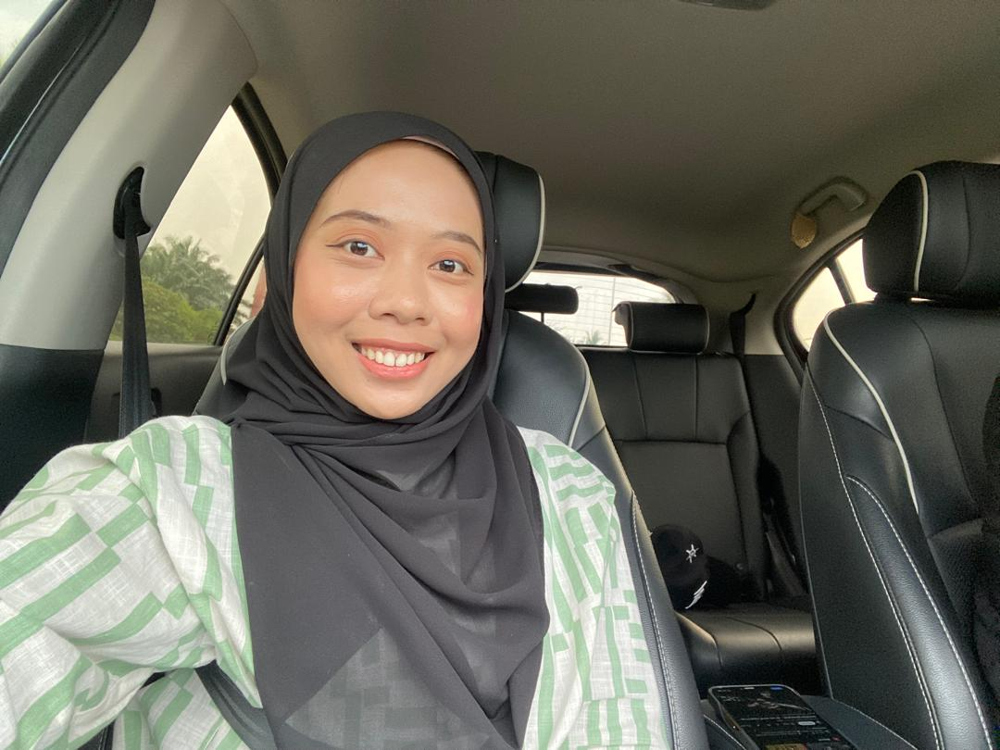
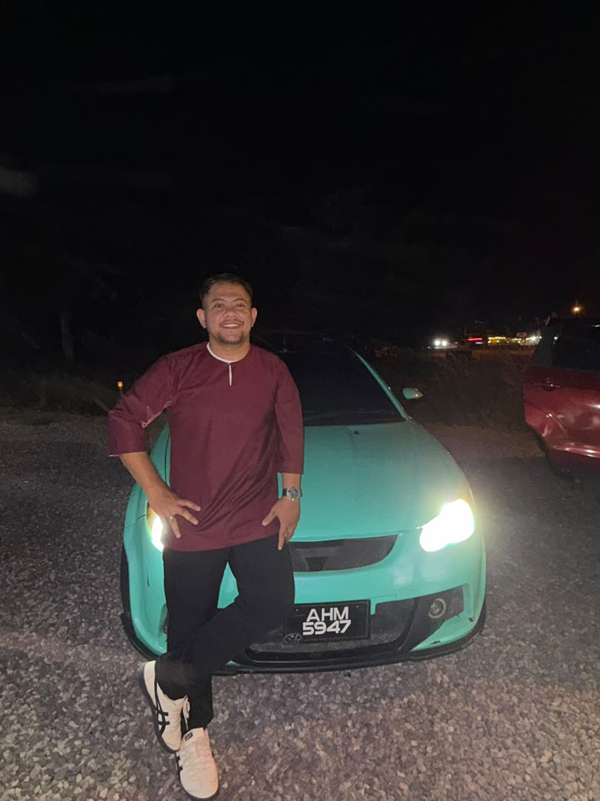
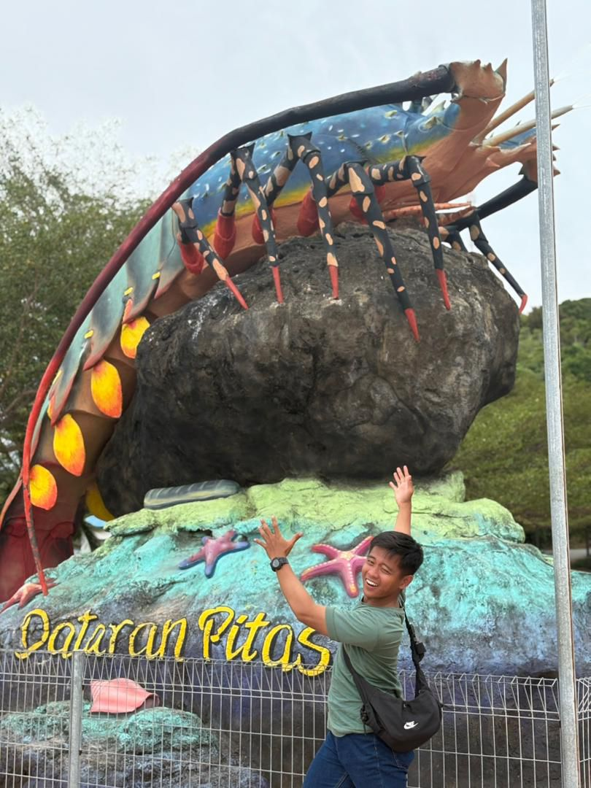
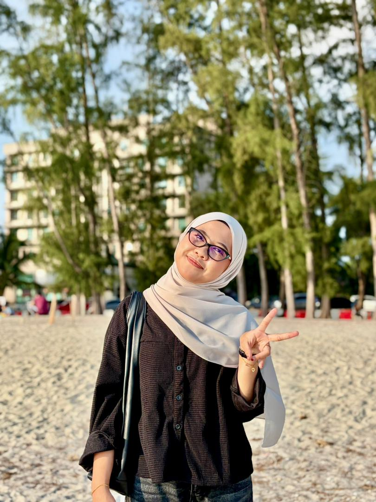
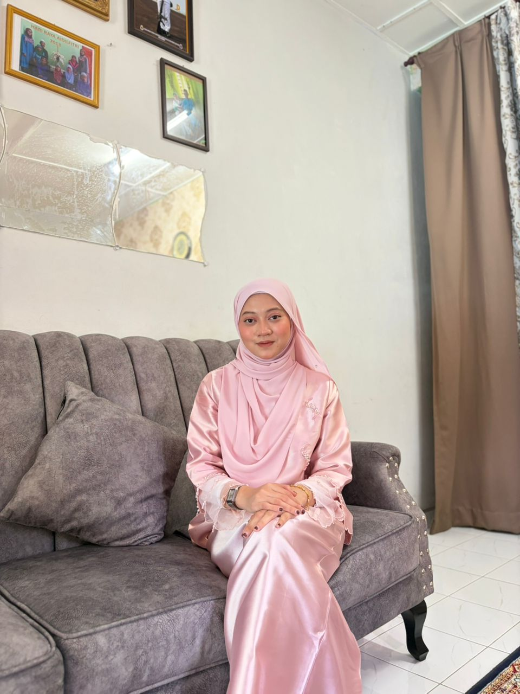

Aliah Binti Mastor (58 years old). My mother who is both firm and caring. She loves their children and give a good suppoters.She is strong women and brave in the world. My mum always bring a smile and give a good advice for their children.

Mohammed Ebnu Saifudin Bin Muslim (62 years old). My father who is both firm and caring. He loves their children and give a good suppoters. He is a strong and brave dad to give their child happiness. My dad is very funny and responsible to take care of the family.

This is my eldest sister who is caring and strict sister. She love their siblings and always give suppoters to thier siblings. She loves to cook and reading a novels.

This is my second sister who is both firm and caring. She is idepandent girl and love to explore the new things. She loves to wacthing indonesia drama or movie.

This is my third sister who is both firm and caring. She loves their sibiling and give a good suppoters. She loves to watching a horror movie. She likes to listening music and reading novels.

My brother who is both firm and caring. He likes to cook and playing video games. He is brave and strong brother to take care thier siblings. He favourite sports is playing a badminton. He likes to bring joy for my family.

My brother who is both firm and caring. My brother is very funny and love to explore the nature vibe. He like to fising with their friends and food hunting.

This is my fourth sister who is caring and brave. She loves to cooks. She loves to food festival hunting with me. Her favourite sports is jogging and briskwalk. She loves to explore the nature vibe such as hiking and travelling.

The eldest sister who is caring and clingy. She loves to explore the nature vibe such as hiking, go to the beach, and food hunting. She love to listening music and reading a novels.